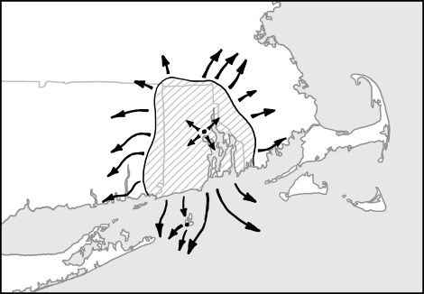

Everybody jump
What would happen if everyone on earth stood as close to each other as they could and jumped, everyone landing on the ground at the same instant?
—Thomas Bennett (and many others)
This is one of the most popular questions submitted to this blog. It’s been examined before, including by a ScienceBlogs post and a Straight Dope article. They cover the kinematics pretty well. However, they don’t tell the whole story.
Let's take a closer look.
At the start of the scenario, the entire Earth’s population has been magically transported together into one place.
This crowd takes up an area the size of Rhode Island. But there’s no reason to use the vague phrase “an area the size of Rhode Island”. This is our scenario; we can be specific. They’re actually in Rhode Island.

At the stroke of noon, everyone jumps.

As discussed elsewhere, it doesn’t really affect the planet. Earth outweighs us by a factor of over ten trillion. On average, we humans can vertically jump maybe half a meter on a good day. Even if the Earth were rigid and responded instantly, it would be pushed down by less than an atom’s width.
Next, everyone falls back to the ground.
Technically, this delivers a lot of energy into the Earth, but it’s spread out over a large enough area that it doesn’t do much more than leave footprints in a lot of gardens. A slight pulse of pressure spreads through the North American continental crust and dissipates with little effect. The sound of all those feet hitting the ground creates a loud, drawn-out roar which lasts many seconds.
Eventually, the air grows quiet.
Seconds pass. Everyone looks around.
There are a lot of uncomfortable glances. Someone coughs.
A cell phone comes out of a pocket. Within seconds, the rest of the world’s five billion phones follow. All of them—even those compatible with the region’s towers—are displaying some version of “NO SIGNAL”. The cell networks have all collapsed under the unprecedented load.
Outside Rhode Island, abandoned machinery begins grinding to a halt.
The T. F. Green airport in Warwick, Rhode Island handles a few thousand passengers a day. Assuming they got things organized (including sending out scouting missions to retrieve fuel), they could run at 500% capacity for years without making a dent in the crowd.
The addition of all the nearby airports doesn’t change the equation much. Nor does the region’s light rail system. Crowds climb on board container ships in the deepwater port of Providence, but stocking sufficient food and water for a long sea voyage proves a challenge.
Rhode Island’s half-million cars are commandeered. Moments later, I-95, I-195, and I-295 become the sites of the largest traffic jam in the history of the planet. Most of the cars are engulfed by the crowds, but a lucky few get out and begin wandering the abandoned road network.
Some make it past New York or Boston before running out of fuel. Since the electricity is probably not on at this point, rather than find a working gas pump, it’s easier to just abandon the car and steal the new one. Who can stop you? All the cops are in Rhode Island.
The edge of the crowd spreads outward into southern Massachusetts and Connecticut. Any two people who meet are unlikely to have a language in common, and almost nobody knows the area. The state becomes a patchwork chaos of coalescing and collapsing social hierarchies. Violence is common. Everybody is hungry and thirsty. Grocery stores are emptied. Fresh water is hard to come by and there’s no efficient system for distributing it.
Within weeks, Rhode Island is a graveyard of billions.
The survivors spread out across the face of the world and struggle to build a new civilization atop the pristine ruins of the old. Our species staggers on, but our population has been greatly reduced. Earth’s orbit is completely unaffected—it spins along exactly as it did before our species-wide jump.
But at least now we know.